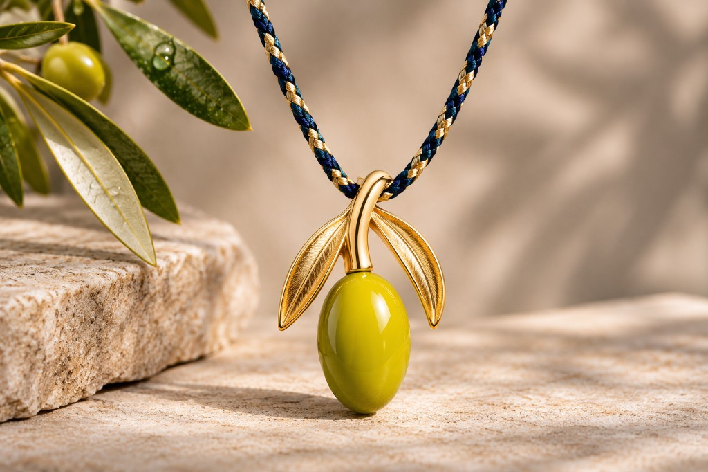
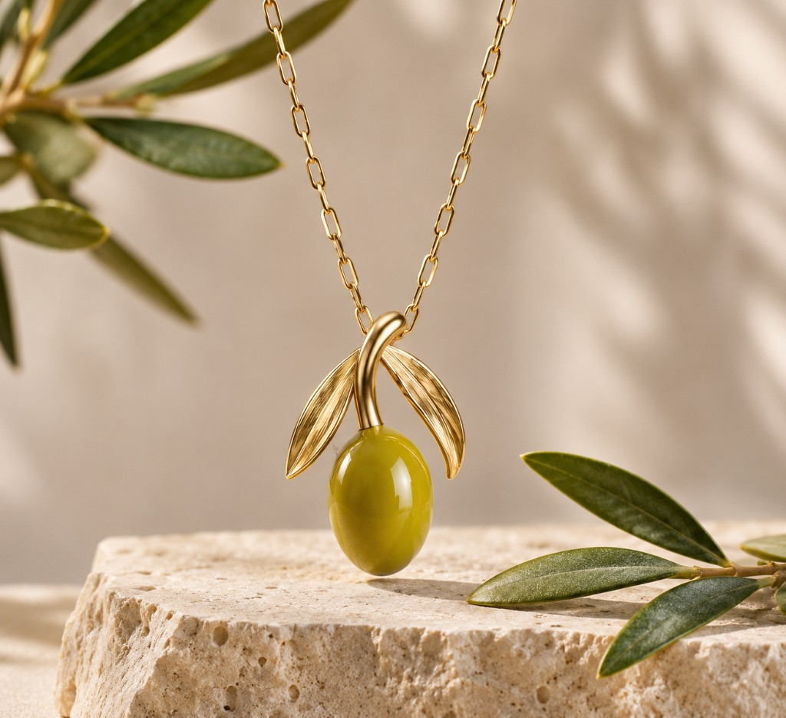
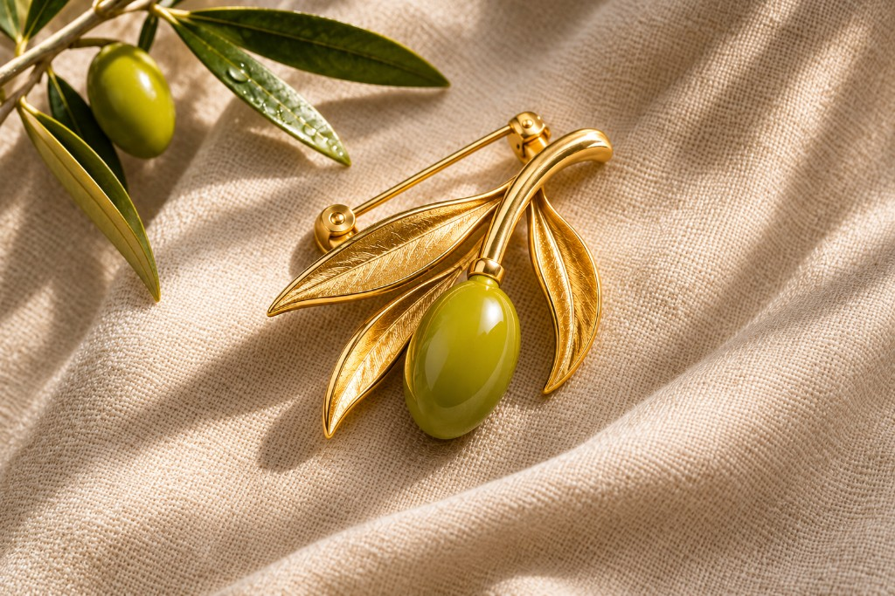
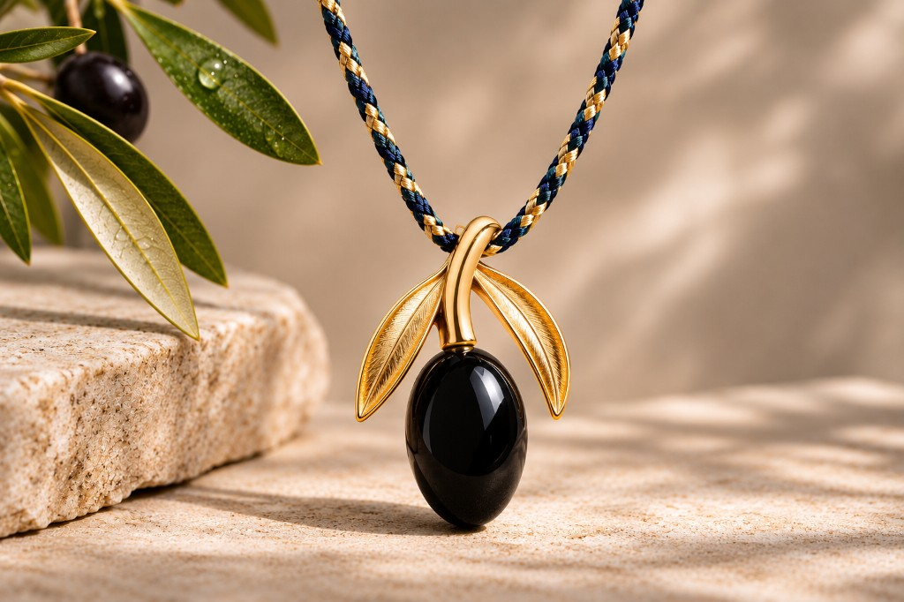
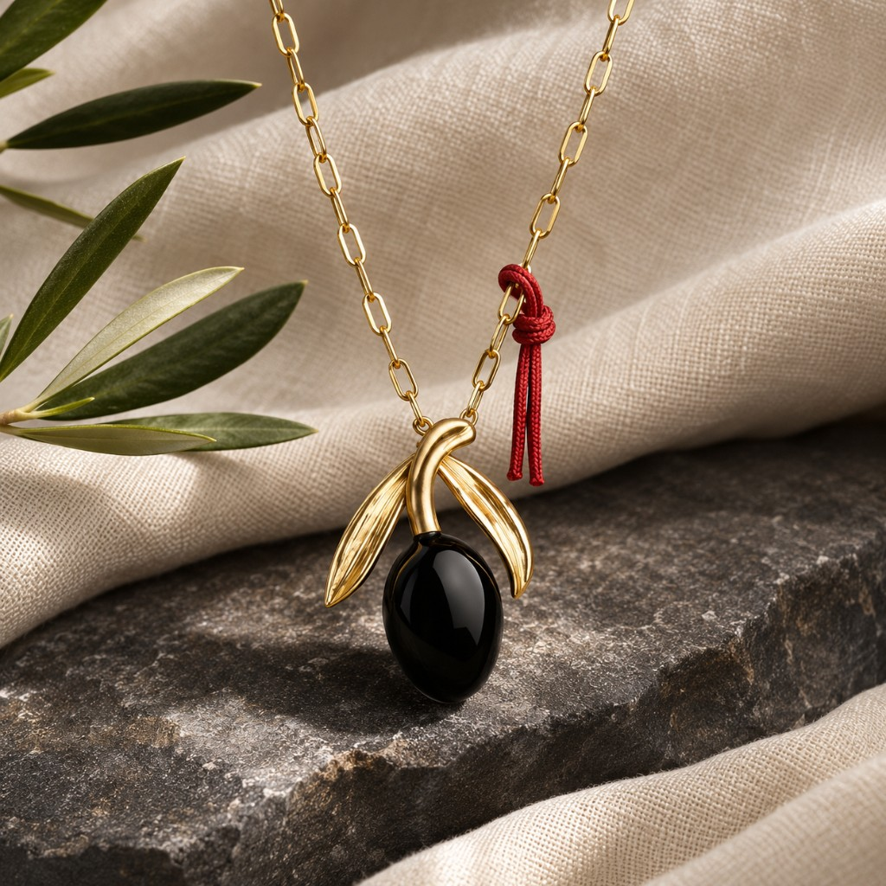
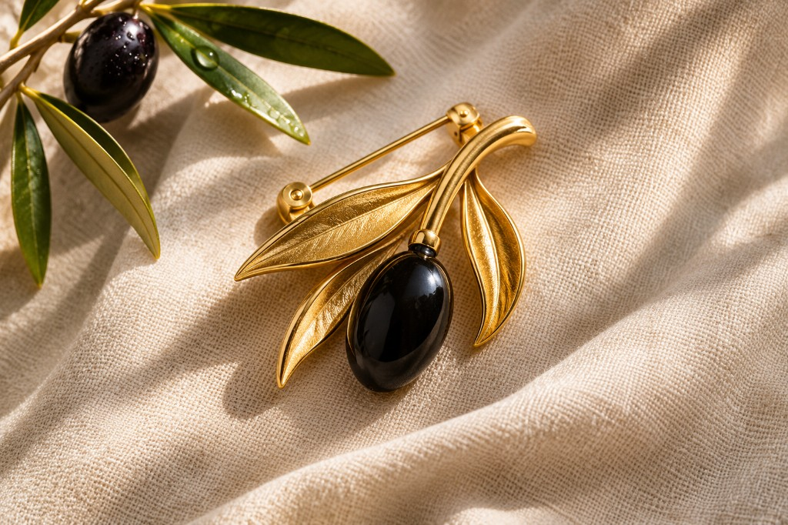

Green olive
Green olive necklace & brooch
Choose a braided cord or a gold chain necklace with a green olive pendant, and a matching green olive brooch — an emblem of abundance and vitality.



OLIEN ARTUK
Timeless jewellery inspired by the olive — a symbol of life, wisdom and abundance.
Quiet luxury · Mediterranean heritage
A symbol of abundance, wisdom and vitality. Nature, transformed into timeless jewellery.
Green olive
Choose a braided cord or a gold chain necklace with a green olive pendant, and a matching green olive brooch — an emblem of abundance and vitality.



Black olive
Choose a braided cord or a gold chain necklace with a black olive pendant, and a matching black olive brooch — quiet, enduring, and ready to wear.



Reserve
Tell us which olive to set aside. This is a request only. No payment is taken here.
This is a request only. We will write to you about this piece. No payment was taken.